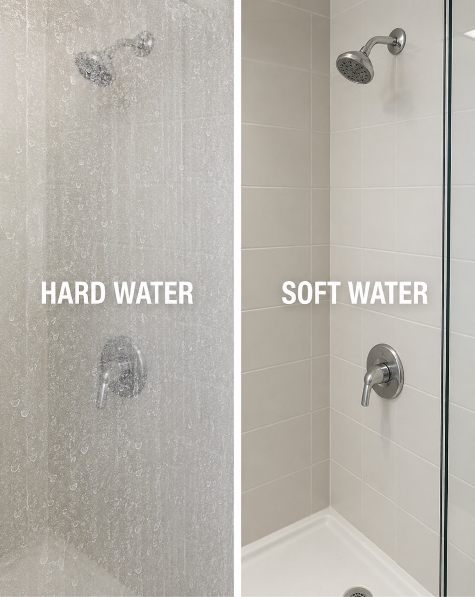

You've already felt soft water.
Hotel shower, same travel shampoo, and suddenly your hair dries soft and your face skips the tight feeling. Then a week at home undoes it. Same you, same products. The only variable that changed was the water.
 Unit hung on shower pipe
Unit hung on shower pipe"After every shower my hair and skin feel noticeably softer." — Julie K.
It's not your hair. It's your water. AG Water Softener is a true ion-exchange water softener sized for your shower — it removes the hard-water minerals that leave hair frizzy and skin tight, and it installs in about ten minutes without a plumber. Most people notice the difference in their first shower, and your included test strips will show it before you even step in.
$249 · Free shipping
The softening technology inside $2,000 whole-house systems, sized to fit your shower.
Salt recharge cycle: every 4-5 weeks.
Love your water or send it back. The guarantee starts the day it arrives.
Hotel shower, same travel shampoo, and suddenly your hair dries soft and your face skips the tight feeling. Then a week at home undoes it. Same you, same products. The only variable that changed was the water.

Most of the US showers in water the USGS classifies as hard or very hard: loaded with dissolved calcium and magnesium. Every rinse leaves a fine mineral film behind. The crust on your shower door is the visible version. Your hair and skin get the invisible one.

A shower filter reduces chlorine, and for most of them that's the whole job — the certification they carry (NSF/ANSI 177) covers chlorine only. The minerals pass straight through. Softening is a different process, and it's the one your hair has been waiting for.
About ten minutes, your bare hands, either on the shower pipe or standing on the floor. Run your before-and-after test strips and watch the water change before your first shower does.
The lather is different. Shampoo foams the way it does on vacation, hair rinses clean instead of coated, and skin feels rinsed instead of filmed.
Conditioner absorbs instead of sitting on top. Detangling gets faster. Waves and curls start clumping and holding instead of collapsing into frizz by day two.
The difference becomes your new normal. Wash day gets shorter, the products you already own start working the way their labels promised, and several people tell us they use less of everything.
$249 · Free shipping · Money-back guarantee
AG Water Softener is a two-cartridge system that treats your shower water in two distinct stages — because, as you now know, those are two distinct jobs.
The heart of AG Water Softener is a bed of ion-exchange resin — the identical class of technology inside whole-house softeners that homeowners describe as "the best hair product investment" they've made. As water passes through, the resin captures calcium and magnesium ions and releases harmless sodium ions in their place. The minerals that coat your hair and crust your shower door get pulled out of the water before it ever reaches you.
This is the part no shower filter does. It's the entire reason AG Water Softener exists.
A separate filter cartridge reduces chlorine, chloramine, heavy metals, and sediment. So you get what a good shower filter offers as well — it's just no longer the whole story.
Every AG Water Softener ships with standard water hardness test strips. Dip one before your first AG Water Softener shower and one after.
Before: your tap water reads hard or very hard, exactly as USGS maps predict for most of the country. After: the same water, run through AG Water Softener, tests soft.
The proof is a color change you can watch happen in your own bathroom on day one, with strips that come in the box.
| AG Water Softener | Shower Filters | Whole-House Softener | Whole-House Filtration | |
|---|---|---|---|---|
| Softens hard water (removes calcium & magnesium) | ● | ○ | ● | ○ |
| Reduces chlorine & heavy metals | ● | ● | ○ | ● |
| No plumbing changes to install | ● | ● | ○ | ○ |
| Renter-safe & fully removable | ● | ● | ○ | ○ |
| Verifiable with a hardness test strip | ● | ○ | ● | ○ |
| Typical cost | $249 | $30-$60 | $1,500-$6,000 installed | $1,000+ installed |
Whole-house results, at shower-sized commitment. And if your test strip doesn't read soft, you have 60 full days to send it back.
On hair: A study published in the International Journal of Trichology compared hair washed in hard water against hair washed in demineralized water. The hard-water strands showed measurably lower tensile strength — meaning hair repeatedly exposed to hardness minerals becomes weaker and more prone to breakage. Weaker, rougher strands are what you experience as frizz, tangling, and hair that snaps when you brush it.
On skin: Research published in the Journal of Investigative Dermatology found that washing with hard water leaves significantly more soap residue clinging to the skin, which raises water loss through the skin barrier — the mechanism behind that tight, stripped feeling after a shower. The same researchers found that softening the water by ion exchange reduced this effect.
Ion exchange is exactly the technology inside AG Water Softener — the same mechanism, at shower scale.
Mechanism-level claims only: hardness minerals, soap residue, lather, hair feel, skin feel, and hardness-strip proof.
Ion exchange has been softening water since 1905. In the 1930s, portable softening was an ordinary household service — families rented compact exchange tanks and swapped them monthly, plumbing untouched. Then the industry consolidated around whole-house systems for homeowners and chlorine filters for everyone else, and the convenient middle stopped being made. AG Water Softener isn't a compromise version of the real thing. It's the real thing, rebuilt for the way people live now.
None of this is a routine problem. It's a water problem, and it doesn't improve on its own.
Everything you need is in the box: hoses, connectors, hardware, and a step-by-step video that assumes you've never installed anything in your life.
Untwist your showerhead, hang the bracket, connect two hoses, and reattach. Most people finish in under ten minutes with their bare hands.
Prefer to keep it out of sight? AG Water Softener sits beside the tub or in the corner of the shower, connected the same way. Same water, same result.
When you move out, removal takes about as long as installation, and your shower goes back to exactly how you found it. Nothing to patch or explain at the walkthrough.
A true softener needs occasional care, because the resin that captures hardness minerals eventually fills up and has to be rinsed clean with salt water. Every real softener on earth works this way, including the $2,000 ones. Here is exactly what AG Water Softener asks of you:
Every four to five weeks or so, the softener cartridge regenerates:
Your hands-on time is about two minutes. The soaking happens while you're at work or asleep. Shower normally the rest of the time.
An early portable softener earned this memorable review years ago: "the installation sucked, but results are fantastic." The results were never the problem in this category. The convenience was. AG Water Softener was engineered specifically to keep the second half of that sentence and delete the first.
If a two-minute ritual every few weeks sounds like more than soft water is worth, this product isn't for you, and we'd rather say so here than in a return email. If it sounds like a fair trade for hair and skin that behave every single day in between, keep reading.
Getting truly soft, filtered water at home has meant buying two separate systems.
Installed by you, in about ten minutes, in the one room where your hair and skin actually meet the water.
That last part matters more than it seems. A whole-house system softens the water in your dishwasher, your garden hose, and your toilet tank. You're paying thousands to treat water that never touches you. AG Water Softener treats the roughly one hundred percent of your personal water exposure that happens in the shower.
We're telling you the ongoing costs before you buy, on purpose. You've been nickel-and-dimed by this category before, and one buyer described a surprise $40 replacement charge as an "actual jumpscare." You will never get one of those from us.
Free shipping · Arrives in days · 60-day guarantee
The pattern in these reviews is worth paying attention to. Almost nobody talks about the device. They talk about what their hair and skin started doing once the water changed.
"No matter how much conditioner I used, my hair felt like dry hay — like it just sucked up moisture and spit it out. A couple weeks with soft water and it finally felt soft again. I don't have to hide it in a bun every day just to deal with it."
"I'm a 2B and hard water minerals used to make my waves limp and frizz out by day two. Now my waves clump beautifully, hold shape all week, and my scalp doesn't feel coated. Wash day is so much easier because there's no mineral buildup to fight through."
"I figured this was just another gadget, but my beard says otherwise. It used to feel like sandpaper after every shower, and now it's actually soft. Even my barber noticed. My girlfriend keeps touching it too, so I guess that's a win."
Your water will tell you the same story within the first few showers. If it doesn't, the guarantee below covers you in full.
Here is how it works, spelled out, because a guarantee you have to squint at isn't a guarantee.
Order AG Water Softener. Install it, run your before-and-after test strips, and shower normally for up to 60 days. That's long enough to get past the first-shower difference and see how your hair and skin settle in over a full two months, through several wash cycles and at least a few regenerations.
If at any point in those 60 days you decide the difference isn't worth it, email us. You'll get a return authorization and a full refund of your $249 once the unit is on its way back.
You are not asked to explain yourself, negotiate, or survive a retention script. The refund terms are the same on day 59 as they are on day one.
Why does a small brand offer this on a $249 product? Because the test strips settle the question before feelings even enter it. When customers can watch the water change on day one, very few boxes come back.
AG Water Softener is engineered for full-flow showering, and pressure preservation was a core design requirement, since it's the most common complaint about lesser shower products.
You test it yourself, in your own bathroom, on day one. AG Water Softener ships with standard water-hardness test strips. Dip one in your tap water and one in your AG Water Softener-treated water and compare the colors. Hardness strips are an industry-standard measure and they cannot be flattered by marketing. If your treated water doesn't test soft, use the guarantee.
Yes. AG Water Softener attaches to the shower pipe the same way a showerhead does, or simply sits on the floor. Removal takes minutes and leaves your shower exactly as you found it. There is nothing drilled, glued, or plumbed for a landlord to notice or a deposit to absorb.
The softener cartridge removes hardness minerals, calcium and magnesium, through ion exchange. The filter cartridge reduces chlorine, chloramine, heavy metals, and sediment. Together they address both halves of the problem: the minerals that coat your hair and skin, and the disinfectants that dry them out.
For some people, yes, briefly. That silky feeling is what skin feels like when soap actually rinses away instead of combining with hardness minerals and clinging to you as residue. Research published in the Journal of Investigative Dermatology measured exactly this: hard water leaves significantly more surfactant deposited on skin after washing. What hard water taught you to interpret as "squeaky clean" was residue. Most people stop noticing the change within a week and then can't stand hotel hard water afterward.
You'll never smell or feel it. Ion exchange swaps hardness minerals for a small amount of sodium, the same trade every whole-house softener makes, and the water remains ordinary soft water. The salt you pour into the tank is used to rinse the resin during regeneration, then drains away.
A filter cartridge replacement schedule and pricing will be published before checkout opens. The ion-exchange resin itself lasts for years. Full replacement pricing will be published on the replacements page, and it will not change between your purchase and your first refill.
AG Water Softener works with standard shower setups and most showerheads, mounts on the pipe or stands on the floor, and includes every hose and connector needed for both options. If your setup turns out to be the rare exception, the 60-day guarantee applies from day one.
"No matter what shampoo I used, my hair always felt coated and dull. Now it actually feels clean and light again. My curls bounce back instead of falling flat."
"The included test strips verified the effectiveness of softening my water, and I noticed an immediate difference in my hair and skin."
"My hair feels significantly softer and less frizzy. My skin feels hydrated and moisturized instead of tight."
Here's the honest picture of the next few months without AG Water Softener. The minerals in your water will keep doing what they've done every day since you moved in. Wash day will keep taking longer than it should. The products on your shelf will keep underperforming their labels, through no fault of theirs or yours. You'll get another glimpse of what your hair can really do the next time you travel, and it will fade a week after you're home, the way it always has.
Or the box arrives this week, you spend ten minutes installing it, and you watch a test strip tell you the problem is gone before you've even taken the first shower.
You've already done the hard part. You played detective for years, ruled out the shampoos, ruled out your routine, and found the actual cause when nobody made it easy to find. The fix is the small part now, and for the next 60 days it's fully refundable.
So — why not give your hair and skin two months of the water they've only ever gotten on vacation?
Free shipping, arrives in days · Better hair and skin in 60 days or your money back · Test strips included, so you'll know it's working before we do
AG Water Softener
$249 · Free shipping